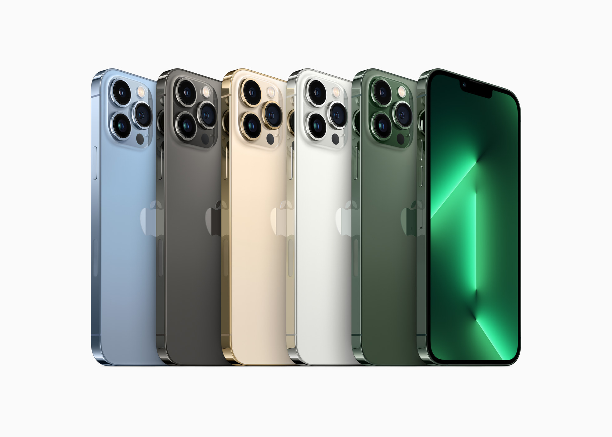
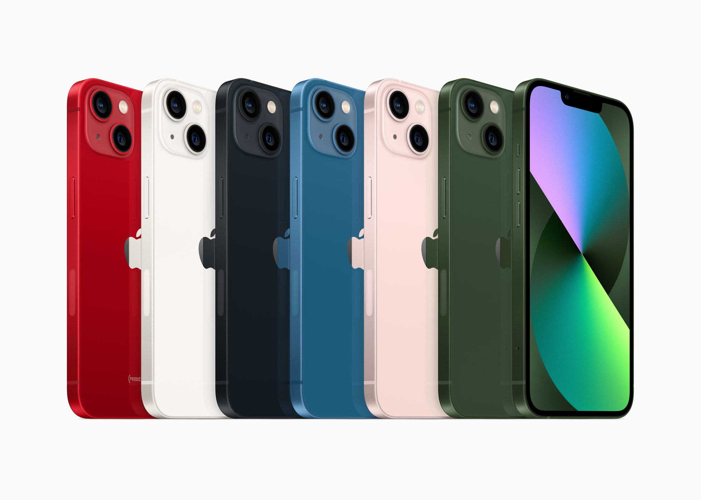

Home
Apple at Work
Work as one.
Or one thousand.
Apple hardware, software and services work together to give you and your employees the power and
flexibility to do whatever needs doing — whether you,re a small business or enterprise.
About
Apple Inc. is an American multinational technology company headquartered in Cupertino, California. As of
March 2023, Apple is the world's biggest company by market capitalization, and with US$394.3 billion the
largest technology company by 2022 revenue.
Apple was founded as Apple Computer Company on April 1, 1976, by Steve Wozniak, Steve Jobs (1955-2011)
and Ronald Wayne to develop and sell Wozniak's Apple I personal computer. It was incorporated by Jobs and
Wozniak as Apple Computer, Inc. in 1977. The company's second computer, the Apple II, became a best seller
and one of the first mass-produced microcomputers. Apple went public in 1980 to instant financial success.
The company developed computers featuring innovative graphical user interfaces, including the 1984 original
Macintosh, announced that year in a critically acclaimed advertisement called "1984". By 1985, the high cost
of its products, and power struggles between executives, caused problems. Wozniak stepped back from Apple
and pursued other ventures, while Jobs resigned and founded NeXT, taking some Apple employees with him
Gallery

iPhone 13 Pro and iPhone 13 Pro Max come in five stunning finishes: sierra blue, graphite, gold, silver, and
the all-new alpine green.

iPhone 13 and iPhone 13 mini come in six beautiful colors: (PRODUCT)RED, starlight, midnight, blue, pink, and
the all-new green.

The green iPhone 13 and iPhone 13 mini feature an elegant colour-matched aluminium frame and precision-milled
back glass.
Macro photography on iPhone 13 Pro allows users to capture detailed images of objects with a minimum focus
distance of 2 centimeters.